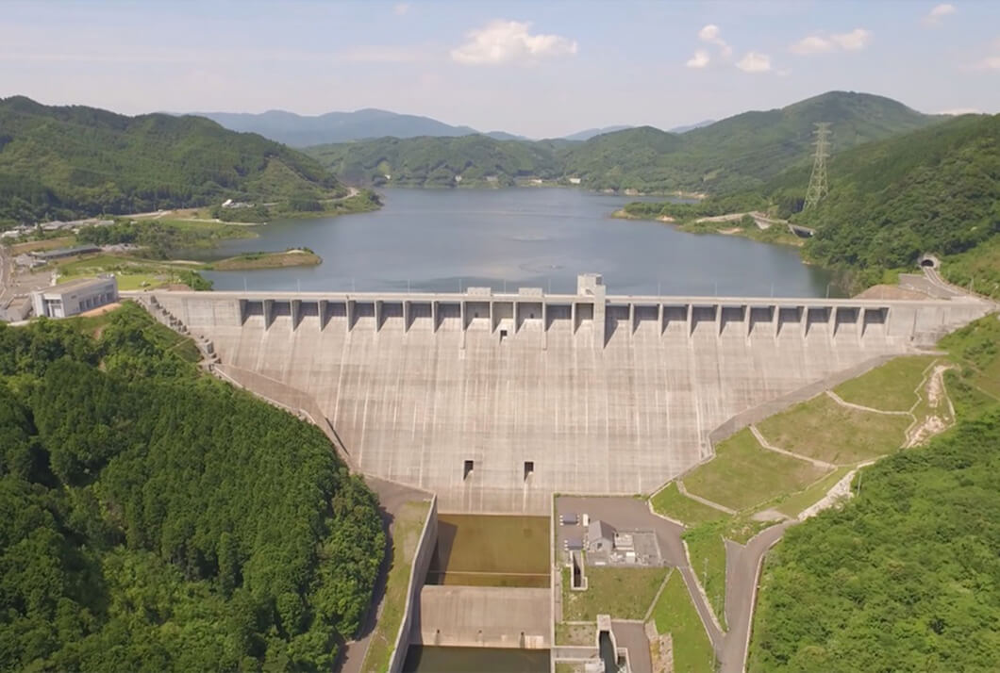

石黒
石黒 志竜
研究テーマ：ダムコンクリートの温度ひび割れ
マスコンクリート特有の水和熱発熱と外部拘束による熱応力発生メカニズムに着目し、実ダム堤体における温度ひび割れ抑制と長期耐久性の向上を目指して研究を行っています。
対象構造物
重力式コンクリートダム
嘉瀬川ダム（佐賀県佐賀市）

嘉瀬川ダム 堤体全景
提供写真
堤高
97.0 m
堤頂長
456.0 m
総貯水量
7,100万 m³
Research Overview
嘉瀬川ダムを対象とした温度ひび割れ挙動の解明
大量のコンクリートを打設するマスコンクリート構造物では、水和熱による内部温度上昇とその後の冷却収縮、さらに基礎岩盤からの拘束が複合して引張応力が発生します。本研究では微視的な水和反応から巨視的な変形・ひび割れ進展までを高精度に追跡・評価しています。
01
セメント水和熱
打設初期の急激な水和反応による発熱と放熱遅延が中心部に生み出す熱勾配の動態を把握します。
初期内部拘束・温度勾配
02
外部拘束応力
降温・体積収縮時に基礎岩盤や既設リフトから受ける拘束により、引張応力が限界値を超過する挙動を分析。
長期貫通ひび割れリスク
03
DuCOM-COM3 連成解析
熱力学条件と力学条件の相互連成反応を直接追跡。微細空隙内の物質移動・水和進行と応力変形を統合解析します。
熱力学—力学条件連成追跡
解析アプローチ：
熱力学解析（DuCOM）× 非線形力学解析（COM3）の強連成